Equipa especializada nas Perturbações do Neurodesenvolvimento

Áreas de atuação
A Clínica Gonçalo Marinho nasceu da vontade de criar um espaço onde cada pessoa se possa sentir escutada, compreendida e acompanhada com proximidade e rigor.
A nossa abordagem clínica
A forma como acompanhamos cada pessoa é tão importante quanto o diagnóstico.